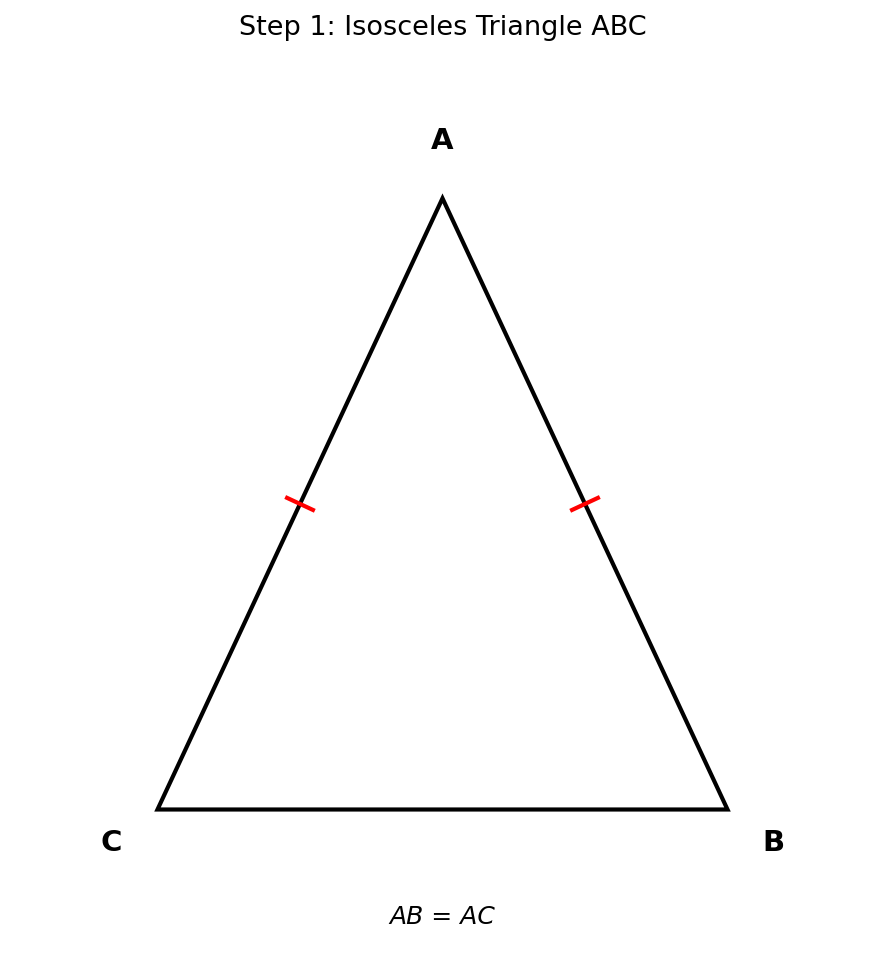
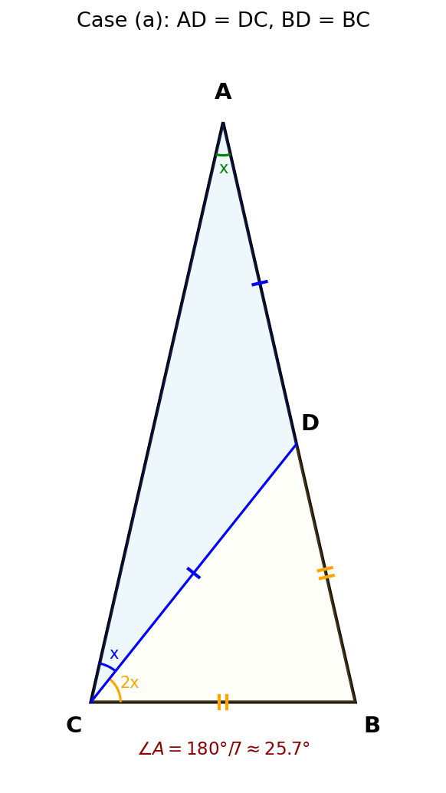
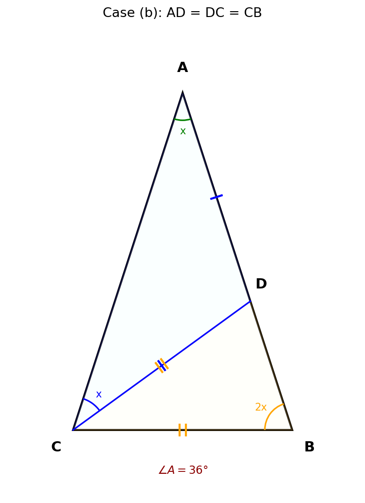

1
题目
在等腰△ABC中，AB = AC。若过点C的一条直线恰好将△ABC分为两个小的等腰三角形，求∠A的度数。
🔑 关键信息：
- • 等腰三角形 AB = AC
- • 过点C的一条直线分割三角形
- • 分成的两个三角形都是等腰三角形

💭 思考问题
?
过点C的直线会交哪条边？
✓ 过点C的直线与AB交于点D，将△ABC分为△ACD和△BCD。
?
两个小三角形各有哪些可能的等腰条件？
✓ 需要分类讨论：哪两条边相等。设∠A = x，通过角度关系列方程求解。
2
设未知数与分析
设 ∠A = x
- • 过C作直线交AB于D
- • △ACD 和 △BCD 都是等腰三角形
- • 由于 AB = AC，∠B = ∠ACB = (180° - x)/2
🔑 关键思路：
对于△ACD，最自然的等腰条件是 AD = DC（因为∠A是顶角对应的底角）。然后对△BCD讨论不同的等腰条件。
对于△ACD，最自然的等腰条件是 AD = DC（因为∠A是顶角对应的底角）。然后对△BCD讨论不同的等腰条件。
💭 思考问题
?
为什么选择 AD = DC 作为△ACD的等腰条件？
✓ 若 AD = DC，则∠A = ∠DCA = x，可以利用已知角度推导出其他角。这是最容易建立方程的情况。
3
情况一：AD = DC，BD = BC

分析△ACD（AD = DC）：
- ∠A = ∠DCA = x（等腰三角形底角相等）
- ∠ADC = 180° - 2x（三角形内角和）
分析△BCD（BD = BC）：
- ∠CDB = 180° - ∠ADC = 2x（邻补角）
- BD = BC → ∠BDC = ∠BCD = 2x
∠ACB = ∠DCA + ∠BCD = x + 2x = 3x
由 AB = AC → ∠B = ∠ACB = 3x
∠A + ∠B + ∠ACB = 180°
x + 3x + 3x = 180°
7x = 180° → ∠A = 180°/7 ≈ 25.7°
💭 思考问题
?
∠CDB = 2x 是怎么得到的？
✓ D在AB上，所以∠ADC + ∠CDB = 180°（邻补角）。因此∠CDB = 180° - (180° - 2x) = 2x。
?
为什么∠B = 3x？
✓ 因为 AB = AC（原三角形等腰），所以∠B = ∠ACB = 3x。
4
情况二：AD = DC = CB

分析△ACD（AD = DC）：
- ∠A = ∠DCA = x（等腰三角形底角相等）
- ∠ADC = 180° - 2x
分析△BCD（DC = CB）：
- ∠CDB = 180° - ∠ADC = 2x（邻补角）
- DC = CB → ∠CDB = ∠B = 2x（等腰三角形底角相等）
由 AB = AC → ∠B = ∠ACB
∠ACB = ∠DCA + ∠BCD = x + (180° - 4x) = 180° - 3x
所以 2x = 180° - 3x
5x = 180° → ∠A = 36°
💭 思考问题
?
情况一和情况二有什么区别？
✓ 情况一中△BCD的腰是BD和BC，情况二中△BCD的腰是DC和CB。虽然都有∠CDB = 2x，但等腰条件不同导致方程不同。
?
∠BCD = 180° - 4x 是怎么来的？
✓ 在△BCD中，三角形内角和：∠BCD = 180° - ∠CDB - ∠B = 180° - 2x - 2x = 180° - 4x。
5
验证答案
情况一验证：
- ∠A = 180°/7 ≈ 25.7°
- ∠B = ∠ACB = 3×(180°/7) = 540°/7 ≈ 77.1°
- 验证：25.7° + 77.1° + 77.1° ≈ 180° ✓
情况二验证：
- ∠A = 36°
- ∠B = ∠ACB = 72°
- 验证：36° + 72° + 72° = 180° ✓
✓
总结
🎯 最终答案
∠A = 180°/7 ≈ 25.7° 或 ∠A = 36°
📋 解题流程
1
设∠A = x，过C作CD交AB于D
2
确定△ACD的等腰条件：AD = DC
3
分类讨论△BCD的等腰条件
4
利用三角形内角和列方程求解
🏷️ 涉及知识点
等腰三角形性质
三角形内角和
邻补角
分类讨论
💡 解题技巧
- • 设角为x：用一个字母表示所有角度，便于列方程
- • 邻补角转化：D在AB上时，∠ADC + ∠CDB = 180°
- • 分类讨论要完整：对等腰三角形中相等边的不同组合逐一分析